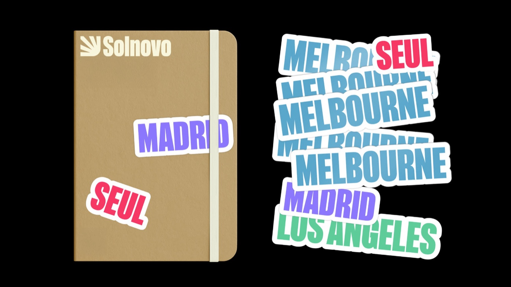

Solnovo is a travel agency dedicated to crafting personalized trips while securing the best discounts for its clients.

The visual identity is inspired by the idea of seeing the sun from a new corner of the world symbolizing fresh experiences and new perspectives.
Visual Identity, Motion
Each continent is represented by a unique color, reflecting the diversity of destinations Solnovo offers.
The identity combines warmth and vibrancy to communicate trust, adventure, and a tailored approach to travel planning.
